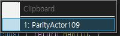
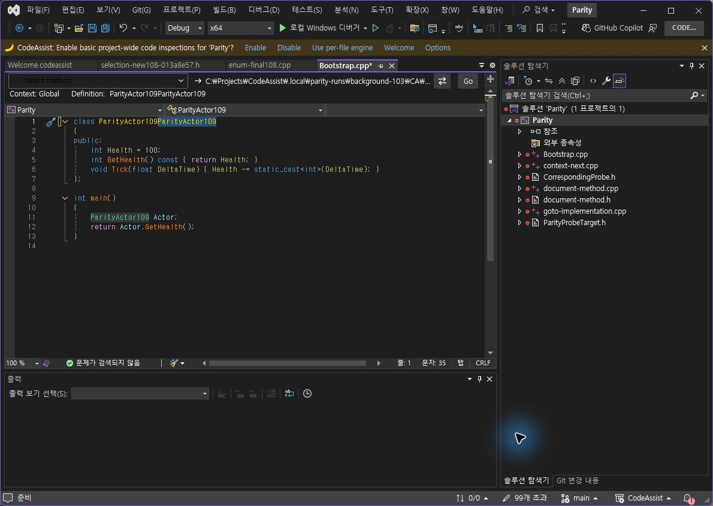

Tracefolio REPORTS & ISSUES
Tracefolio REPORTS & ISSUES0.0.106 붙여넣기 옵션·메뉴
기존 기록 이전원문에 기록된 작업 내용과 당시 검증 범위를 정리한 보관 기록입니다.
0.0.106 붙여넣기 메뉴 대조
0.0.106 붙여넣기 옵션·메뉴
누락된 Display paste menu with 체크박스를 실제 설정·명령 분기와 연결했습니다. 끄면 Ctrl+Shift+V가 Edit.CycleClipboardRing으로 전달되고, 켜면 CA 메뉴가 열립니다. 공식 과거 변경 기록이 끄기 동작의 근거입니다. 현재 VA에서 끄기 분기를 직접 재실행한 것으로 계산하지 않습니다.
VA / CA106 실제 메뉴


같은 문자열 복사와 Ctrl+Shift+V로 양쪽의 작은 메뉴를 촬영했습니다. CA는 커서 옆 표시·테마 배경으로 변경됐습니다. 아이콘 여백, 헤더 배치, 선택 테두리가 남아 있어 UI 완전 일치가 아닙니다.
CA105 변경 전

추가한 설정과 실제 끄기



CA 단독 실행 점검 5/5(100%): 끄면 개수 입력 비활성화, 저장 false 반영 후 기본 붙여넣기 실행, 켜면 목록 열림, Enter 선택·닫힘, Escape 취소. 105/106의 실행 버전을 results.json에 구분했습니다. 이 100%는 제품 전체 동기화율이 아닙니다. 검사 편집은 실행 취소했으며 메뉴 표시 설정은 true로 복구했습니다.
Core 테스트 295/295 통과. VS2019·Modern 빌드 및 설치 바이너리 6/6 일치. 문서 부분 명세 108/108(100%)는 전체 역분석 완료율 아님.
미완료: 메뉴 세부 배치·색상, 다른 누락 옵션, 라이트 테마, 전체 108개 기능 현재 실행 대조. 결과·촬영 해시 · 설치 검증 · 테스트 · 빌드
XERJ: 사용 — 클립보드 옵션·호출 경로 검색 후 소스·실행 확인.
원문과 편집 이력
- 원문 SHA-256:
c641ccff5a4ccbf1457790c7ca608f094a1d92fcaa877b09c6582e1fecdb0041 - 표시 날짜는 원본 파일의 수정 시각입니다. 작업 완료 시각은 원문에 있는 값을 기준으로 확인합니다.